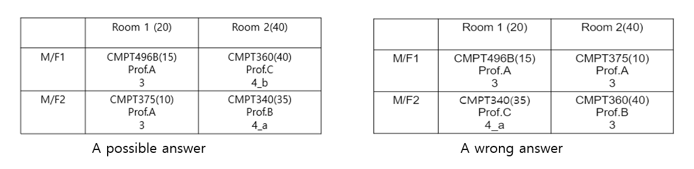
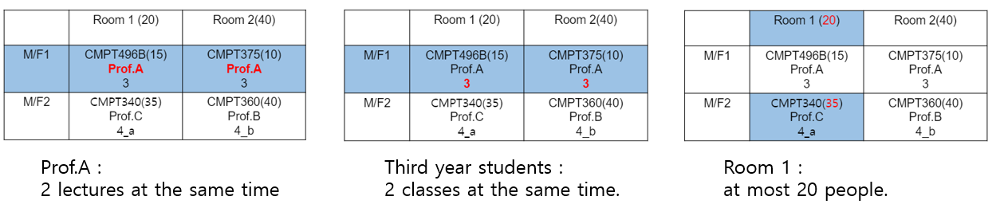
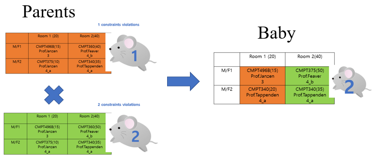
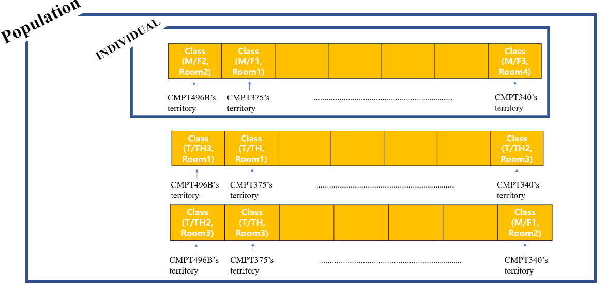
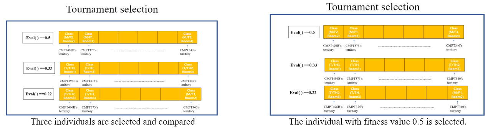
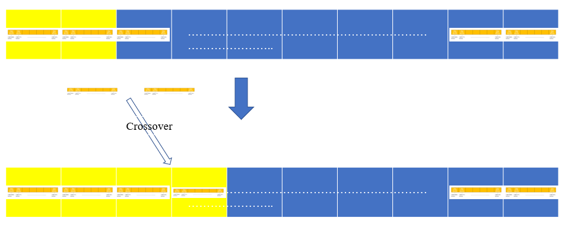
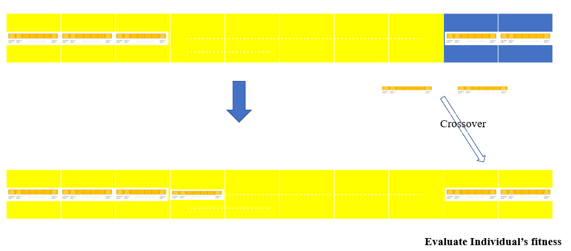

Let's say we need to make schedule for room/time with courses. How can we tune the schedule for all the courses?
It could be easy enough to be done by manual way when it is not too much to tune, however, If the scale is too large to schedule it manually, then it would not be the best way to do it manually.
Those are courses we have for coming semester, and we want to match room and time for each courses without any conflicts.
The left picture below is one of the possible answers for the scheduling and the right picture below is one of the wrong answer.

Why can't it be the right answer?

Evaluation function: 1/(1+number of constraints)
If evaluation function is equal to 1, then it can be possible solution.
The concept of Genetic Algorithm
Genetic algorithm uses the idea derived from inheritance to find a solution for problems.
All individual gets their genetic information from their parents, equally from mother and father. Sometimes, mutation occurs, and it changes genetic information.
In the Genetic Algorithm, each individual contains information which is a candidate for answer. (It does not have to be right.)
Each individual is now evaluated how close it is to the correct answer. Depends on the fitness value of individual, it varies the chance of being parents.
If fitness value is high, then it has more chance to be picked up as parents. Two individuals are parents, and two offspring are made from one parent. A simple mixture of parents' information is now information of offspring.
The mouse below contains information of schedule. For the explanation, let's say this mouse does not show their information(schedule) but show only the constraints of the schedule they carry.
From the population, Two are chosen and then reproduce their baby by mixing the information they have. 
Then, how can we present course information and the classes at each individual?
Let’s say there are 7 courses. These 7 courses need classroom and specific time. Where and when.
This can be done by using array.
Each index represents (classroom and time) information.
For example, Array[0] means (Monday_1st period, Room1), Array[1] (Monday_2nd period,Room1) ,....,(Friday_5th period, Room5)
So whichever course is at the index of 0, this course is held in Monday_1st period and Room 1.
Now, we need to initialize population. Population is the group of individuals which contain a candidate for the right schedule.

After setting initial population, all individuals are evaluated with fitness formula. If there is any individual which has fitness value of 1, then it means that individual is the one we are looking for. Therefore, we pick that one as the right answer and terminate our algorithm.
However, It is not likely to happen.
If none of them has fitness value of 1, then now we need to make another population replacing previous individuals(parents) to better individuals(offsprings).
It is possibly done by selcting parents which has high fitness and mutating some information to avoid being kept in local optima.
Selection

There are some diverse selection methods such as rank order, Russian roulette etc., but This algorithm used rank order selection.
Pick several (3 in this case) individuals from the population and compare the fitness value. Pick individual which has the highest value of fitness value.
Crossover
Random point(within index) is selected, and from that index, Information from the parents is exchanged and it became the offspring.
Mutation
Only some individuals are undergoing mutation. Random index is chosen, and the course at the index changes it to new one.
The number next to the generation (iteration number) means the total fitness of the entire individuals. Generation 4 to 6 shows the effect of mutation. If it were not for mutation, the population's fitness would not have gone up.
To new generation
First of all, pick two individuals from the population. (In this case, the population is entirely from previous generation.)
Then, reproduce the information to make two children and replace it with individuals with lower index number. 
When it is all replaced, it becomes entirely new generation. 
After making new generation, pick some individuals which we will be mutated.
Then, now, repeat this process over and over again until we find the first individual which has fitness value of 1.